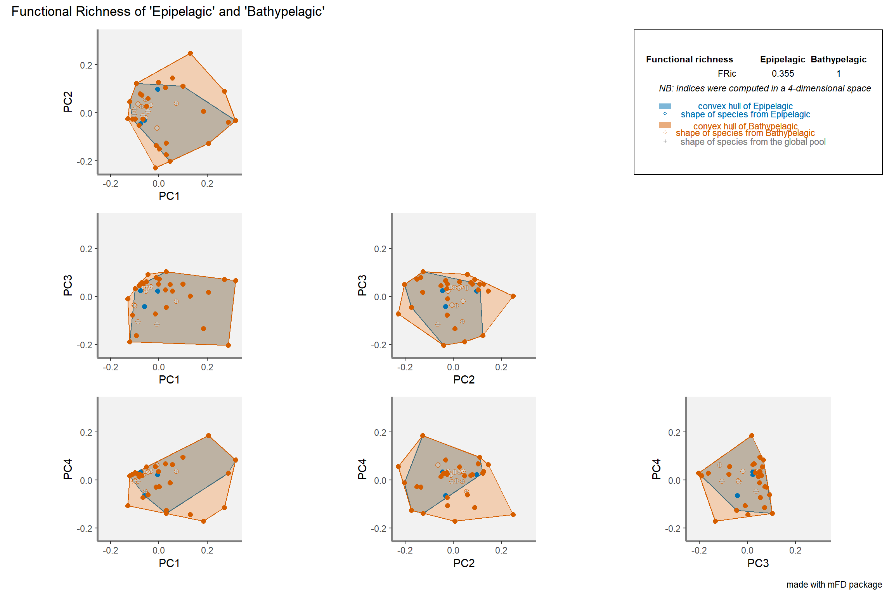
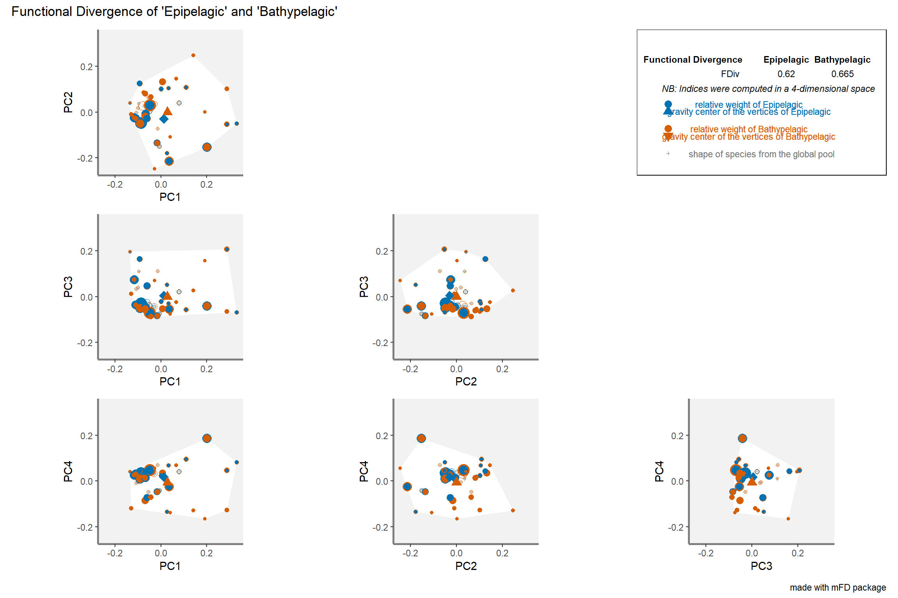
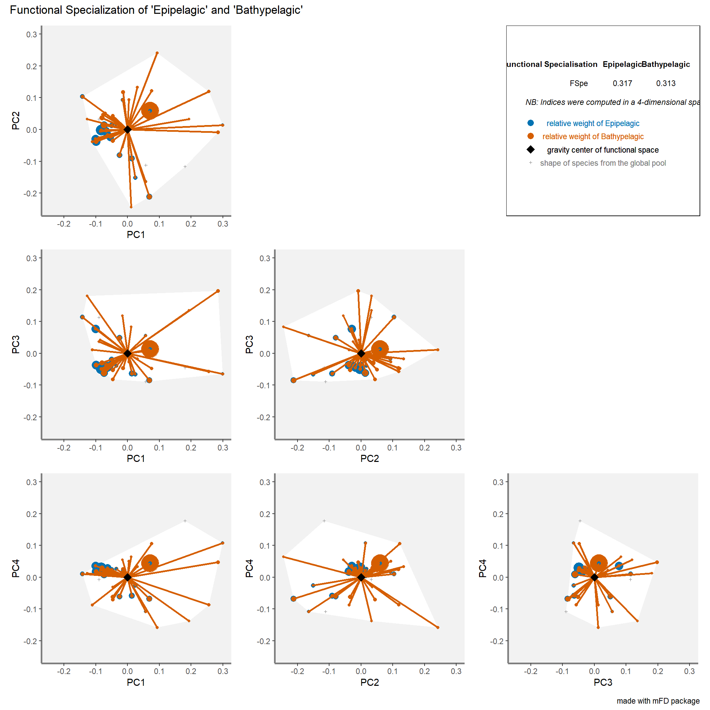
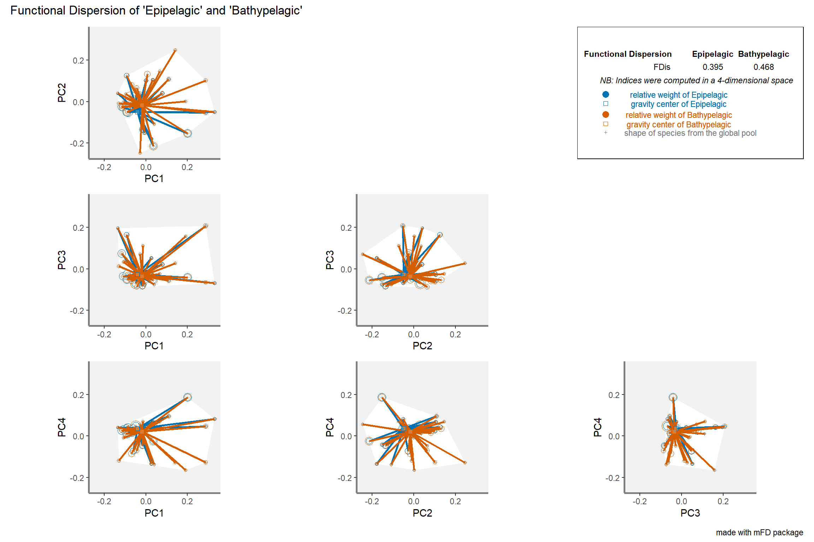
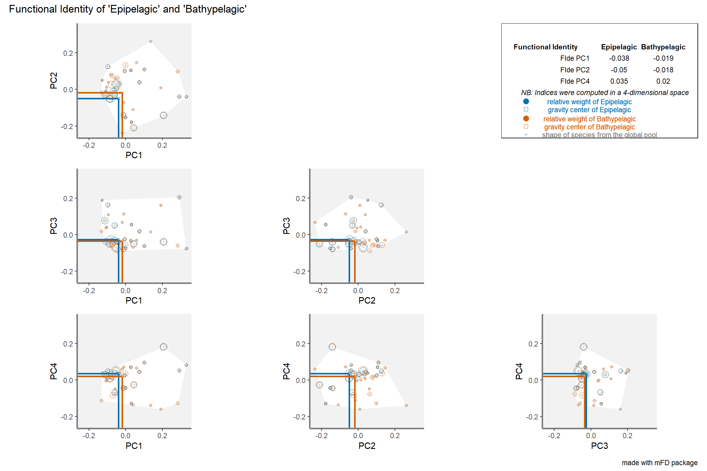

## Summary of the assemblages * species data.frame ----asb_sp_fish_summ <- mFD::asb.sp.summary(asb_sp_w = depth_fish_biomass)asb_sp_fish_occ <- asb_sp_fish_summ$"asb_sp_occ"htmltools::tagList(DT::datatable(asb_sp_fish_occ))
2.2 Computing distances between species based on functional traits
We have non-continuous traits so we use the Gower distance(metric = “gower”) as this method allows traits weighting.
Code
sp_dist_fish <- mFD::funct.dist(sp_tr = fish_traits,tr_cat = fish_traits_cat,metric ="gower",scale_euclid ="scale_center",ordinal_var ="classic",weight_type ="equal",stop_if_NA =TRUE)## Output of the function mFD::funct.dist() ----round(sp_dist_fish, 3)
2.3 Building functional spaces and chosing the best one
2.3.1 Computing several multimensional functional spaces and assessing their quality
mFD evaluates the quality of PCoA-based multidimensional spaces according to the deviation between trait-based distances and distances in the functional space (extension of Maire et al. (2015) framework).
This function generates a figure with three panels (in rows) for each selected functional space (in columns). Each column represents a functional space, the value of the quality metric is written on the top of each column. The x-axis of all panels represents trait-based distances. The y-axis is different for each row:
on the first (top) row, the y-axis represents species functional distances in the multidimensional space. Thus, the closer species are to the 1:1 line, the better distances in the functional space fit trait-based ones.
on the second row, the y-axis shows the raw deviation of species distances in the functional space compared to trait-based distances. Thus, the raw deviation reflects the distance to the horizontal line.
on the third row (bottom), the y-axis shows the absolute or squared deviation of the (“scaled”) distance in the functional space. It is the deviation that is taken into account for computing the quality metric.
2.3.3 Testing the correlation between functional axes and traits
a data.frame gathering indices values in each assemblage (for FIde values, there are as many columns as there are axes to the studied functional space).
a details list of data.frames and lists gathering information such as coordinates of centroids, distances and identity of the nearest neighbour, distances to the centroid, etc. The user does not have to directly use it but it will be useful if FD indices are then plotted. It can be retrieved through:
the proportion of functional space filled by species of the studied assemblage, i.e. the volume inside the convex-hull shaping species. To compute FRic the number of species must be at least higher than the number of functional axis + 1.
Code
plots_alpha$"fric"$"patchwork"

FDiv Functional Divergence
the proportion of the biomass supported by the species with the most extreme functional traits i.e. the ones located close to the edge of the convex-hull filled by the assemblage
Code
plots_alpha$"fdiv"$"patchwork"

FSpe Functional Specialization
the biomass weighted mean distance to the mean position of species from the global pool (present in all assemblages).
Code
plots_alpha$"fspe"$"patchwork"

FDis Functional Dispersion
the biomass weighted deviation of species traits values from the center of the functional space filled by the assemblage i.e. the biomass-weighted mean distance to the biomass-weighted mean trait values of the assemblage.
Code
plots_alpha$"fdis"$"patchwork"

FIde Functional Identity
the mean traits values for the assemblage. FIde is always computed when FDis is computed.
Code
plots_alpha$"fide"$"patchwork"

3.2.Computing and plotting beta FD indices
The function returns a list containing:
a dist object with beta indices values for each pair of assemblages:
Functional distinctiveness is the mean of dissimilarity of the focal species to all the other species of the set of interest. It can be abundance-weighted if needed.
Functional uniqueness is the smallest dissimilarity that exists between the focal species and the all other species in the set. It does not consider the abundance of any species.
Rarity indices:
Scarcity is proportional to the relative abundance of the species. It gets close to one when the species is (relatively) rare and close to 0 when its dominant
Restrictedness is 1 minus the ratio of sites a species occupy over the total number of sites.
4.2.Computing functional rarity
4.2.1 Functional originality at regional scale
For the choice or dissimilarity matrix we can use the raw dissimilarity matrix computed directly on raw traits values among species:
Another option would be to compute a new functional dissimilarity matrix based on the selected functional axes. One advantage of the latter is that it already takes into account the correlation between traits (recompute regional functional distinctiveness based on the n selected functional axes. Because the space comes from a PCA, we can directly use euclidean distance):
Code
new_dissim <-dist(sp_faxes_coord_fish[, c("PC1", "PC2", "PC3", "PC4")])sp_di_alt <- funrar::distinctiveness_global(new_dissim, di_name ="alt_di")#We can now compare both distinctiveness values.sp_all_di <-merge(sp_di, sp_di_alt, by ="species")plot(sp_all_di$distinctiveness, sp_all_di$alt_di)
Pearson's product-moment correlation
data: sp_all_di$distinctiveness and sp_all_di$alt_di
t = 23.765, df = 39, p-value < 2.2e-16
alternative hypothesis: true correlation is not equal to 0
95 percent confidence interval:
0.9388754 0.9824797
sample estimates:
cor
0.9671647
Both seems very correlated, so in our case using either one should be fine. However, it can be better to use dissimilarity based on a reduced number of well-defined axes because: (1) there are more interpretable thanks to the multivariate analysis, (2) the first one contain of the most information, (3) they explicitly take into account potentially strong correlations between provided traits. We’ll stick here with raw dissimilarity for the sake of simplicity
To compute uniqueness at regional scale we also need the regional level functional dissimilarity matrix with the uniqueness() function, and the site-species matrix:
Code
sp_ui <- funrar::uniqueness(pres_matrix = depth_fish_biomass,as.matrix(sp_dist_fish))quantile(sp_ui$Ui, probs =seq(0, 1, by =0.1))
Based on these results we see that Anoplogaster cornuta, Evermannella balbo, and Chauliodus sloani are the most isolated fish in the functional space. Meaning that they have the most distant nearest neighbors.
As we had to manually build the function to compute the local uniqueness the results are strangely formatted.
We provide here a function that can help them to be more easily read:
Code
depth_ui <-lapply(names(depth_ui), function(x) { single_depth = depth_ui[[x]] single_depth$site = xreturn(single_depth)})depth_ui <-do.call(rbind, depth_ui)#Then we can again look at the apple to see how its uniqueness varies across depths.subset(depth_ui, species =="Melanostomias_bartonbeani")
Anoplogaster_cornuta Arctozenus_risso Argyropelecus_hemigymnus
Min. :0.9894 Min. :0.2241 Min. :0.9552
1st Qu.:0.9894 1st Qu.:0.2246 1st Qu.:0.9748
Median :0.9894 Median :0.4195 Median :0.9945
Mean :0.9894 Mean :0.4810 Mean :0.9829
3rd Qu.:0.9894 3rd Qu.:0.6759 3rd Qu.:0.9967
Max. :0.9894 Max. :0.8610 Max. :0.9989
NA's :3 NA's :1
Argyropelecus_olfersii Bathylagus_euryops Benthosema_glaciale
Min. :0.1391 Min. :0.7501 Min. :0.1861
1st Qu.:0.4735 1st Qu.:0.7501 1st Qu.:0.5025
Median :0.7039 Median :0.7501 Median :0.6259
Mean :0.6082 Mean :0.7501 Mean :0.5855
3rd Qu.:0.8387 3rd Qu.:0.7501 3rd Qu.:0.7088
Max. :0.8861 Max. :0.7501 Max. :0.9040
NA's :3
Bolinichthys_supralateralis Borostomias_antarcticus Ceratoscopelus_maderensis
Min. :0.9153 Min. :0.9413 Min. :0.2886
1st Qu.:0.9349 1st Qu.:0.9597 1st Qu.:0.3544
Median :0.9545 Median :0.9781 Median :0.5431
Mean :0.9545 Mean :0.9701 Mean :0.5775
3rd Qu.:0.9741 3rd Qu.:0.9845 3rd Qu.:0.7662
Max. :0.9937 Max. :0.9909 Max. :0.9353
NA's :2 NA's :1
Chauliodus_sloani Cyclothone_sp Derichthys_serpentinus Evermannella_balbo
Min. :0.8757 Min. :0.0000 Min. :0.9515 Min. :0.8150
1st Qu.:0.8890 1st Qu.:0.3383 1st Qu.:0.9689 1st Qu.:0.9029
Median :0.9022 Median :0.7009 Median :0.9863 Median :0.9909
Mean :0.9199 Mean :0.5886 Mean :0.9775 Mean :0.9335
3rd Qu.:0.9420 3rd Qu.:0.9512 3rd Qu.:0.9905 3rd Qu.:0.9928
Max. :0.9818 Max. :0.9524 Max. :0.9947 Max. :0.9947
NA's :1 NA's :1 NA's :1
Gonostoma_elongatum Holtbyrnia_anomala Holtbyrnia_macrops
Min. :0.8566 Min. :0.978 Min. :0.9728
1st Qu.:0.8888 1st Qu.:0.978 1st Qu.:0.9782
Median :0.9209 Median :0.978 Median :0.9836
Mean :0.9209 Mean :0.978 Mean :0.9844
3rd Qu.:0.9531 3rd Qu.:0.978 3rd Qu.:0.9902
Max. :0.9853 Max. :0.978 Max. :0.9968
NA's :2 NA's :3 NA's :1
Lampanyctus_crocodilus Lampanyctus_macdonaldi Lestidiops_sphyrenoides
Min. :0.003498 Min. :0.7893 Min. :0.8640
1st Qu.:0.034610 1st Qu.:0.7893 1st Qu.:0.9217
Median :0.151031 Median :0.7893 Median :0.9682
Mean :0.155920 Mean :0.7893 Mean :0.9493
3rd Qu.:0.272341 3rd Qu.:0.7893 3rd Qu.:0.9958
Max. :0.318123 Max. :0.7893 Max. :0.9968
NA's :3
Lobianchia_gemellarii Malacosteus_niger Maulisia_argipalla Maulisia_mauli
Min. :0.9295 Min. :0.9483 Min. :0.9307 Min. :0.8638
1st Qu.:0.9357 1st Qu.:0.9522 1st Qu.:0.9422 1st Qu.:0.9183
Median :0.9436 Median :0.9561 Median :0.9538 Median :0.9727
Mean :0.9420 Mean :0.9561 Mean :0.9538 Mean :0.9440
3rd Qu.:0.9499 3rd Qu.:0.9601 3rd Qu.:0.9654 3rd Qu.:0.9841
Max. :0.9515 Max. :0.9640 Max. :0.9769 Max. :0.9954
NA's :2 NA's :2 NA's :1
Maulisia_microlepis Maurolicus_muelleri Melanostigma_atlanticum
Min. :0.9003 Min. :0.2555 Min. :0.9358
1st Qu.:0.9003 1st Qu.:0.2629 1st Qu.:0.9651
Median :0.9003 Median :0.5930 Median :0.9754
Mean :0.9003 Mean :0.5975 Mean :0.9682
3rd Qu.:0.9003 3rd Qu.:0.9276 3rd Qu.:0.9785
Max. :0.9003 Max. :0.9483 Max. :0.9863
NA's :3
Melanostomias_bartonbeani Myctophum_punctatum Lampanyctus_ater
Min. :0.8794 Min. :0.05241 Min. :0.7337
1st Qu.:0.9064 1st Qu.:0.38476 1st Qu.:0.8103
Median :0.9435 Median :0.55380 Median :0.9021
Mean :0.9356 Mean :0.50618 Mean :0.8785
3rd Qu.:0.9728 3rd Qu.:0.67522 3rd Qu.:0.9703
Max. :0.9759 Max. :0.86469 Max. :0.9759
Normichthys_operosus Notoscopelus_kroyeri Photostylus_pycnopterus
Min. :0.5662 Min. :0.1046 Min. :0.9937
1st Qu.:0.5662 1st Qu.:0.2676 1st Qu.:0.9937
Median :0.5662 Median :0.4199 Median :0.9937
Mean :0.5662 Mean :0.4157 Mean :0.9937
3rd Qu.:0.5662 3rd Qu.:0.5680 3rd Qu.:0.9937
Max. :0.5662 Max. :0.7181 Max. :0.9937
NA's :3 NA's :3
Sagamichthys_schnakenbecki Searsia_koefoedi Serrivomer_beanii
Min. :0.9255 Min. :0.5295 Min. :0.3697
1st Qu.:0.9537 1st Qu.:0.6528 1st Qu.:0.5046
Median :0.9818 Median :0.7806 Median :0.5673
Mean :0.9677 Mean :0.7516 Mean :0.5415
3rd Qu.:0.9888 3rd Qu.:0.8795 3rd Qu.:0.6042
Max. :0.9958 Max. :0.9157 Max. :0.6617
NA's :1
Sigmops_bathyphilus Xenodermichthys_copei Notoscopelus_bolini
Min. :0.9749 Min. :0.001488 Min. :0.3507
1st Qu.:0.9749 1st Qu.:0.008431 1st Qu.:0.6617
Median :0.9749 Median :0.320069 Median :0.9727
Mean :0.9749 Mean :0.337104 Mean :0.7717
3rd Qu.:0.9749 3rd Qu.:0.648742 3rd Qu.:0.9821
Max. :0.9749 Max. :0.706791 Max. :0.9915
NA's :3 NA's :1
__ restrictiveness__:
Code
ri = funrar::restrictedness(depth_fish_biomass)summary(ri)
species Ri
Length:38 Min. :0.0000
Class :character 1st Qu.:0.0000
Mode :character Median :0.2500
Mean :0.2697
3rd Qu.:0.5000
Max. :0.7500
4.3 Plotting functional rarity
4.3.1 Plotting functional originality
option to be able to colour species according to their functional originality (and not use the ready-made functions in the mfd package)
As was done with mFD to correlate the functional axes with species’ traits we can correlate functional distinctiveness to specific traits in order to see which traits are mainly driving distinctiveness.
Regarding local level functional originality indices, the visualization can be more difficult to grasp and depends highly on the question. Would you rather focus on visualizing the functional distinctiveness of one species across communities? Compare the distribution of functional distinctiveness values across communities?
One idea to keep in mind is that averaging functional distinctiveness per community is exactly equal to computing functional dispersion. Functional originality is computed on a species basis, so we should be aware that if we are rather interested by community properties than we can compute functional diversity metrics which are much more appropriate.
sp_di_ri <-merge(sp_di, ri, by ="species")sp_di_ri_ui <-merge(sp_di_ri, sp_ui, by ="species")plot_dist_ri_reg <-ggplot(sp_di_ri, aes(distinctiveness, Ri)) +geom_point() + ggrepel::geom_text_repel(aes(label = species)) +labs(x ="Functional Distinctiveness", y ="Geographical Restrictedness") +theme_bw() +theme(aspect.ratio =1)plot_dist_ri_reg
On this visualization we can clearly see that Anoplogaster cornuta is overall the most distinct species while being quite restricted in terms of depth. On the other hand, the two Myctophidae Lampanyctus ater and Lobianchia_gemellarii are the most functionally common and regionally widespread species (low restrictedness).